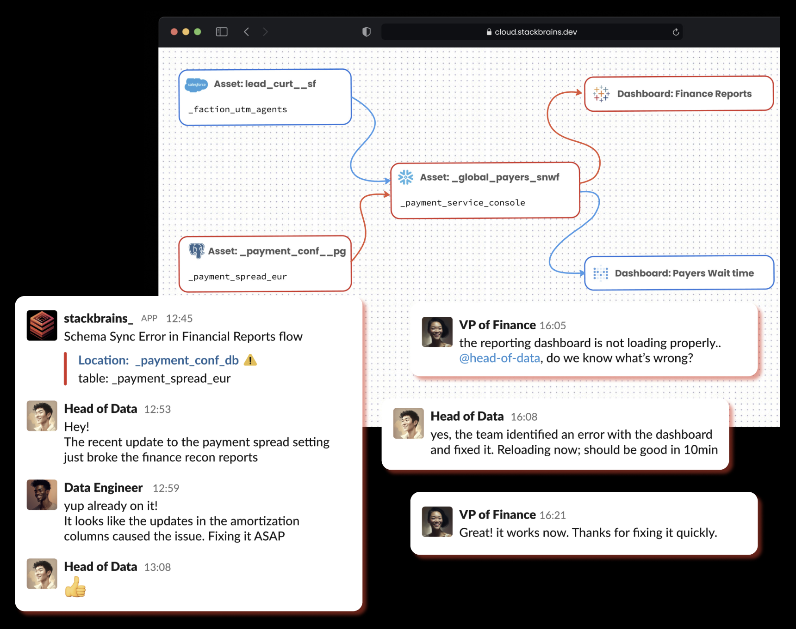
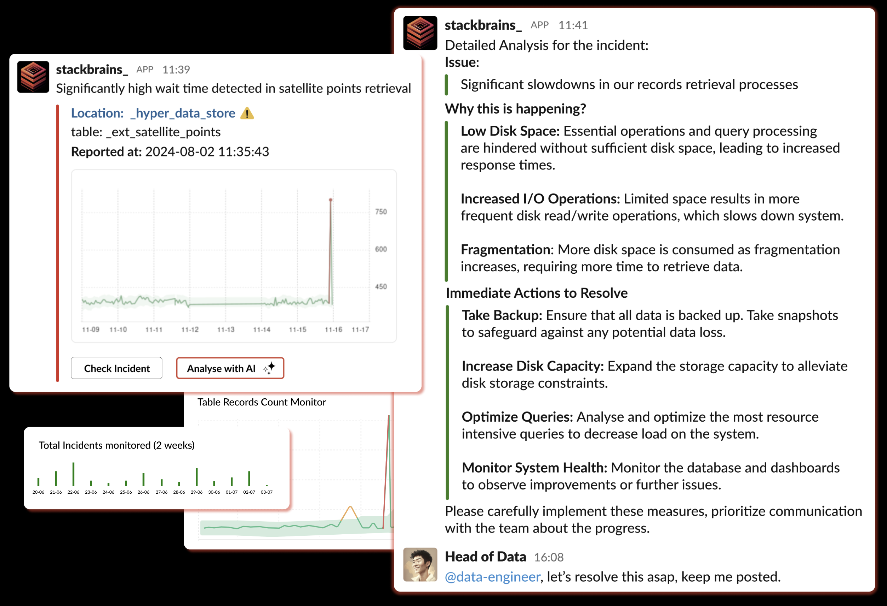
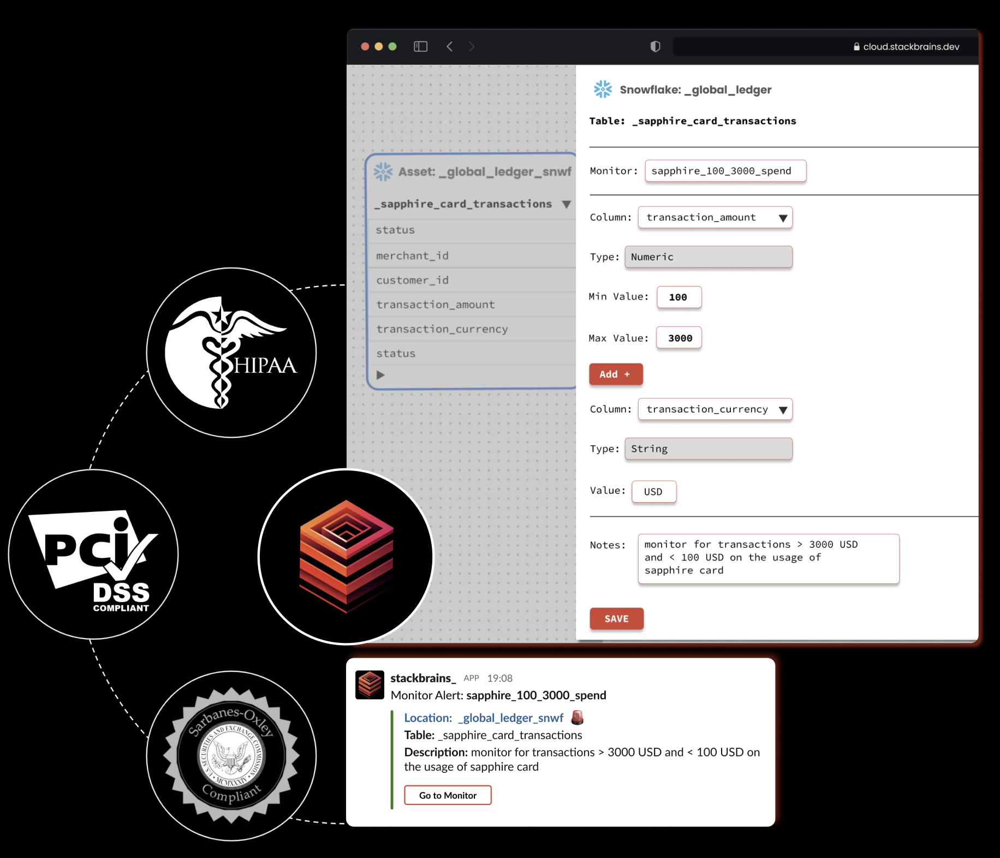
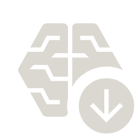

Integrate stackbrains_ and Supercharge your Data |
Empower your team with advanced observability and enhanced visibility across your entire data stack — ensuring high Quality, Governance and Trust over Data.
Backed by

End-to-end data observability platform for data-driven teams
Instant Incident Alerts
Real-time alerts, identify and resolve issues as they occur
Navigate complex data flows to pinpoint root causes of data incidents and their downstream impacts.
Get column-level lineage from databases to dashboards, assessing impact, prioritizing actions.
Proactively spot and debug errors with instant alerts, eliminating the wait for stakeholders' notifications.

Automated AI-Based solutions
AI and ML to Detect and Resolve Hidden Data Anomalies
Leverage AI for detailed incident analysis for swift and effective resolution.
ML based monitors identify and get alerts for unknown issues, ensuring no anomaly goes undetected.
Automatically monitor health metrics of data assets and data ingestion based triggers.

Data Governance and Quality Control
Monitor data quality and compliance across your data stack
Set manual thresholds for specific metrics and use-cases relevant to regulatory needs.
Ensure data management practices meet industry standards and regulations.
Continuously monitor data quality, ensuring high data integrity and accuracy with ease.

Unified Data Ecosystem
Integrate atop existing data stack and infrastructure
Onboard your existing data stack, with seamless integration whether on-premises or in the cloud.
Streamline the data integrations with connectors across warehouses, databases and modern data tools.
Sync effortlessly with collaboration tools across preferred channels.
Track issues at speed, resolve proactively with AI and maintain high quality for better decisions
Faster Issue Detection
Pinpoint data issues precisely with lineage tracing, drastically reducing time spent identifying problems within your data setup.
Proactive Resolution
Receive instant alerts to identify issues before stakeholders notify you, empowering teams to take proactive measures at speed.

Analyse with AI
Leverage AI to analyze incidents, providing insights into causes and efficient solutions, speeding up issue resolution.
Stay Compliance-Ready
Employ rigorous data quality checks to ensure compliance with regulations and simplify audit processes by identifying key data points.
Advanced Monitoring
Get integrated ML-based monitors to detect otherwise unnoticed data anomalies, enhancing decision-making with reliable data.
Collaboration Across Teams
Integrate with preferred tools to enhance communication across teams, ensuring all key stakeholders are well-informed.
Copyright © Stackbrains Pte. Ltd. 2024 All Rights Reserved